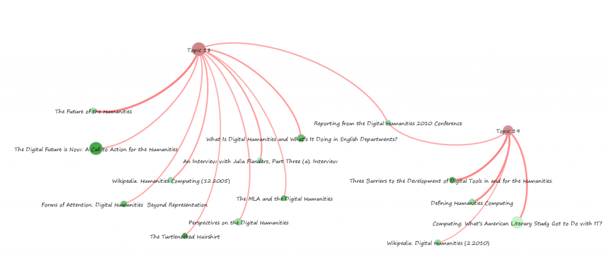
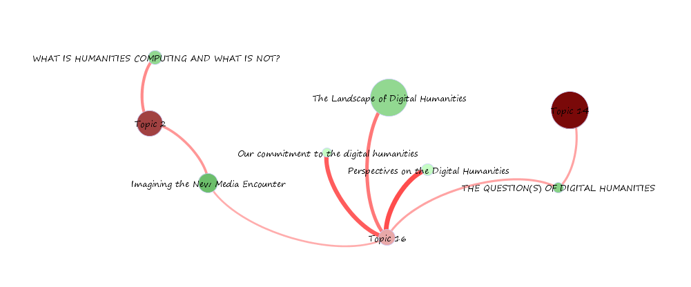
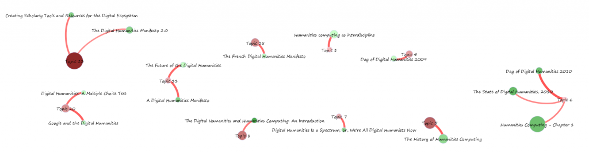
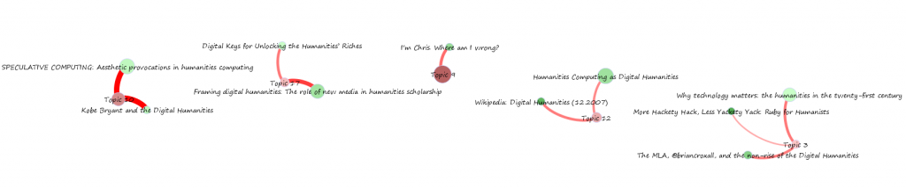
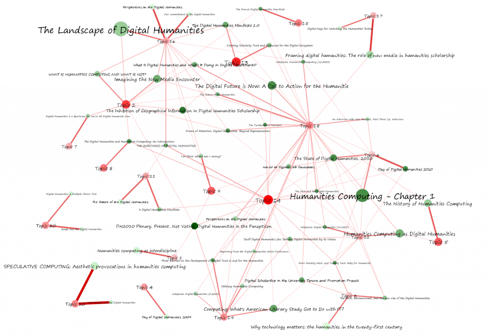

Comprehending the Digital Humanities
Topology
Topics
Documents
Data
Further Research
The LDA-based thematic analysis was run with only 20 topics. Along with an enlarged corpus, an enlarged topic allotment would likely prove useful for a scholar interested in pursuing this exploration further. The lack of granularity provided by 20 topics resulted in an impoverished topic network that, while useful for the practical purpose of exploring topic network analysis, really doesn’t provide much heft as far as exposing the thematic relations between the texts in the sample. Many topics have a one-to-one relationship with texts when looking at strong connections (defined as higher than 20%) and as such, these could be indications of style rather than theme. Any such evaluation would require a close reading of a sample of the papers as well as an examination of the distribution of the connections between paper and topic as well as word and topic.
While a topic can be considered at its root to be a cluster of colocated words, it is also a relation between the documents associated with it and the larger structures that topic is strongly connected to via shared words and documents. As such, the definition of a topic and its influence on documents must be analyzed not only from the perspective of its particular word associations but also as a point between various documents and topological structures. While this is more difficult with large corpora, with only 50 documents in this experiment, the definition of a topic qualitatively by its association with particular documents is more achievable. Likewise, the definition of a topic by its topological location is also possible and made more possible with network visualization.
Connections between topic and paper are scaled linearly from light pink to dark red and connection width is similarly scaled. For exact values, please see the original graph file.


Topic network analysis for strong connections (.2 or greater edge) for topics 18 and 19, which show the greatest coverage of topics with strong connections.


Strong connections of papers to Topics 2, 14 and 16.


Topics and papers with one-to-one or few-to-one paper-to-topic connections.


Topics and papers with one-to-one or few-to-one paper-to-topic connections.
When looking at weak connections (10% or greater) there is a much more connected network, though there are still noticeable isolated structures outside of it.


The network as seen with connections with a greater than .1 strength between topic and paper.
Topic 1 An Interview with Julia Flanders, Part Three (a): Interview 6%
Topic 1 DH2010 Plenary: Present, Not Voting: Digital Humanities in the Panopticon 11%
Topic 1 Forms of Attention: Digital Humanities Beyond Representation 5%
Topic 1 Humanities computing as interdiscipline 44%
Topic 2 A Digital Humanities Manifesto 7%
Topic 2 The Digital Humanities Manifesto 2.0 7%
Topic 2 The French Digital Humanities Manifesto 10%
Topic 2 The Turtlenecked Hairshirt 9%
Topic 2 The Future of the Humanities 10%
Topic 2 What Is Digital Humanities and What’s It Doing in English Departments? 11%
Topic 2 Imagining the New Media Encounter 27%
Topic 2 The Landscape of Digital Humanities 16%
Topic 2 WHAT IS HUMANITIES COMPUTING AND WHAT IS NOT? 31%
Topic 2 Framing digital humanities: The role of new media in humanities scholarship 6%
Topic 2 An Interview with Julia Flanders, Part Three (a): Interview 5%
Topic 2 Day of Digital Humanities 2009 8%
Topic 2 Wikipedia: Digital Humanities (2.2010) 5%
Topic 2 Wikipedia: Humanities Computing (12.2005) 5%
Topic 2 The Future of the Digital Humanities. 5%
Topic 2 Computing: What's American Literary Study Got to Do with IT? 8%
Topic 2 Digital Keys for Unlocking the Humanities’ Riches 8%
Topic 2 Stuff Digital Humanists Like: Defining Digital Humanities by its Values 5%
Topic 2 DH2010 Plenary: Present, Not Voting: Digital Humanities in the Panopticon 11%
Topic 2 Google and the Digital Humanities 7%
Topic 2 Digital Humanities Is a Spectrum; or, We're All Digital Humanists Now 17%
Topic 2 Our commitment to the digital humanities 5%
Topic 2 Forms of Attention: Digital Humanities Beyond Representation 13%
Topic 2 The Inhibition of Geographical Information in Digital Humanities Scholarship 15%
Topic 2 Defining Humanities Computing 7%
Topic 2 The Digital Future is Now: A Call to Action for the Humanitie 7%
Topic 2 The Digital Humanities and Humanities Computing: An Introduction 13%
Topic 2 Why technology matters: the humanities in the twenty-first century 5%
Topic 2 THE QUESTION(S) OF DIGITAL HUMANITIES 8%
Topic 2 Humanities computing as interdiscipline 5%
Topic 2 Creating Scholarly Tools and Resources for the Digital Ecosystem 8%
Topic 3 Wikipedia: Humanities Computing (12.2005) 5%
Topic 3 Wikipedia: Digital Humanities (12.2007) 7%
Topic 3 The MLA and the Digital Humanities 9%
Topic 3 The MLA, @briancroxall, and the non-rise of the Digital Humanities 36%
Topic 3 Perspectives on the Digital Humanities 6%
Topic 3 Digital Scholarship in the University Tenure and Promotion Process 16%
Topic 3 Why technology matters: the humanities in the twenty-first century 37%
Topic 3 More Hackety Hack, Less Yackety Yack: Ruby for Humanists 21%
Topic 4 An Interview with Julia Flanders, Part Three (a): Interview 5%
Topic 4 Day of Digital Humanities 2009 40%
Topic 4 DH2010 Plenary: Present, Not Voting: Digital Humanities in the Panopticon 6%
Topic 5 The French Digital Humanities Manifesto 6%
Topic 5 WHAT IS HUMANITIES COMPUTING AND WHAT IS NOT? 5%
Topic 5 Humanities Computing as Digital Humanities 10%
Topic 5 An Interview with Julia Flanders, Part Three (a): Interview 7%
Topic 5 Wikipedia: Digital Humanities (2.2010) 6%
Topic 5 Stuff Digital Humanists Like: Defining Digital Humanities by its Values 6%
Topic 5 Google and the Digital Humanities 7%
Topic 5 Perspectives on the Digital Humanities 7%
Topic 5 The History of Humanities Computing 46%
Topic 5 Forms of Attention: Digital Humanities Beyond Representation 9%
Topic 5 Defining Humanities Computing 5%
Topic 5 Three Barriers to the Development of Digital Tools in and for the Humanities. 6%
Topic 5 Digital Humanities: A Multiple Choice Test 5%
Topic 5 Advice to DigHum Job Candidates 5%
Topic 6 The State of Digital Humanities, 2010 32%
Topic 6 An Interview with Julia Flanders, Part Three (a): Interview 15%
Topic 6 Day of Digital Humanities 2010 49%
Topic 6 Wikipedia: Humanities Computing (12.2005) 10%
Topic 6 The MLA and the Digital Humanities 10%
Topic 6 Reporting from the Digital Humanities 2010 Conference 6%
Topic 6 The Digital Future is Now: A Call to Action for the Humanitie 7%
Topic 6 Perspectives on the Digital Humanities 6%
Topic 6 Digital Scholarship in the University Tenure and Promotion Process 5%
Topic 6 Why technology matters: the humanities in the twenty-first century 8%
Topic 6 Humanities Computing - Chapter 1 33%
Topic 6 More Hackety Hack, Less Yackety Yack: Ruby for Humanists 11%
Topic 6 Advice to DigHum Job Candidates 14%
Topic 7 The Turtlenecked Hairshirt 5%
Topic 7 Digital Humanities Is a Spectrum; or, We're All Digital Humanists Now 42%
Topic 7 Humanities computing as interdiscipline 6%
Topic 8 The Digital Humanities and Humanities Computing: An Introduction 37%
Topic 8 THE QUESTION(S) OF DIGITAL HUMANITIES 7%
Topic 9 The Digital Humanities Manifesto 2.0 8%
Topic 9 What Is Digital Humanities and What’s It Doing in English Departments? 5%
Topic 9 Imagining the New Media Encounter 5%
Topic 9 Wikipedia: Digital Humanities (2.2010) 6%
Topic 9 The MLA, @briancroxall, and the non-rise of the Digital Humanities 6%
Topic 9 Stuff Digital Humanists Like: Defining Digital Humanities by its Values 10%
Topic 9 Kobe Bryant and the Digital Humanities 5%
Topic 9 I'm Chris. Where am I wrong? 41%
Topic 9 DH2010 Plenary: Present, Not Voting: Digital Humanities in the Panopticon 11%
Topic 9 Our commitment to the digital humanities 6%
Topic 9 The Inhibition of Geographical Information in Digital Humanities Scholarship 10%
Topic 9 SPECULATIVE COMPUTING: Aesthetic provocations in humanities computing 6%
Topic 9 Defining Humanities Computing 5%
Topic 9 Three Barriers to the Development of Digital Tools in and for the Humanities. 6%
Topic 9 Digital Scholarship in the University Tenure and Promotion Process 6%
Topic 9 Advice to DigHum Job Candidates 10%
Topic 10 Reporting from the Digital Humanities 2010 Conference 5%
Topic 10 Stuff Digital Humanists Like: Defining Digital Humanities by its Values 7%
Topic 10 Kobe Bryant and the Digital Humanities 76%
Topic 10 Forms of Attention: Digital Humanities Beyond Representation 5%
Topic 10 SPECULATIVE COMPUTING: Aesthetic provocations in humanities computing 75%
Topic 11 A Digital Humanities Manifesto 43%
Topic 11 Wikipedia: Digital Humanities (12.2007) 7%
Topic 11 The Future of the Digital Humanities. 43%
Topic 11 The MLA and the Digital Humanities 9%
Topic 11 Reporting from the Digital Humanities 2010 Conference 9%
Topic 11 Digital Humanities Is a Spectrum; or, We're All Digital Humanists Now 5%
Topic 11 Our commitment to the digital humanities 5%
Topic 11 The Inhibition of Geographical Information in Digital Humanities Scholarship 5%
Topic 11 The Digital Humanities and Humanities Computing: An Introduction 8%
Topic 11 THE QUESTION(S) OF DIGITAL HUMANITIES 10%
Topic 11 Humanities Computing - Chapter 1 5%
Topic 12 The State of Digital Humanities, 2010 10%
Topic 12 The Turtlenecked Hairshirt 8%
Topic 12 The Landscape of Digital Humanities 5%
Topic 12 Humanities Computing as Digital Humanities 32%
Topic 12 Day of Digital Humanities 2010 11%
Topic 12 Wikipedia: Digital Humanities (2.2010) 8%
Topic 12 Wikipedia: Humanities Computing (12.2005) 8%
Topic 12 Wikipedia: Digital Humanities (12.2007) 36%
Topic 12 The Future of the Digital Humanities. 7%
Topic 12 The MLA and the Digital Humanities 11%
Topic 12 The MLA, @briancroxall, and the non-rise of the Digital Humanities 13%
Topic 12 Computing: What's American Literary Study Got to Do with IT? 10%
Topic 12 Reporting from the Digital Humanities 2010 Conference 6%
Topic 12 Stuff Digital Humanists Like: Defining Digital Humanities by its Values 15%
Topic 12 Our commitment to the digital humanities 5%
Topic 12 Forms of Attention: Digital Humanities Beyond Representation 10%
Topic 12 Defining Humanities Computing 5%
Topic 12 Three Barriers to the Development of Digital Tools in and for the Humanities. 6%
Topic 12 The Digital Future is Now: A Call to Action for the Humanitie 8%
Topic 12 Perspectives on the Digital Humanities 6%
Topic 12 Digital Scholarship in the University Tenure and Promotion Process 9%
Topic 12 Why technology matters: the humanities in the twenty-first century 7%
Topic 12 Humanities Computing - Chapter 1 11%
Topic 12 Digital Humanities: A Multiple Choice Test 5%
Topic 12 More Hackety Hack, Less Yackety Yack: Ruby for Humanists 15%
Topic 12 Advice to DigHum Job Candidates 8%
Topic 12 Humanities computing as interdiscipline 6%
Topic 13 The Digital Humanities Manifesto 2.0 30%
Topic 13 The French Digital Humanities Manifesto 5%
Topic 13 The Turtlenecked Hairshirt 11%
Topic 13 Imagining the New Media Encounter 5%
Topic 13 WHAT IS HUMANITIES COMPUTING AND WHAT IS NOT? 6%
Topic 13 Our commitment to the digital humanities 5%
Topic 13 Perspectives on the Digital Humanities 5%
Topic 13 The Inhibition of Geographical Information in Digital Humanities Scholarship 11%
Topic 13 The Digital Future is Now: A Call to Action for the Humanitie 11%
Topic 13 Digital Scholarship in the University Tenure and Promotion Process 7%
Topic 13 Advice to DigHum Job Candidates 6%
Topic 13 Creating Scholarly Tools and Resources for the Digital Ecosystem 37%
Topic 14 The State of Digital Humanities, 2010 11%
Topic 14 A Digital Humanities Manifesto 13%
Topic 14 The Digital Humanities Manifesto 2.0 9%
Topic 14 The Turtlenecked Hairshirt 15%
Topic 14 Humanities Computing as Digital Humanities 9%
Topic 14 Day of Digital Humanities 2010 11%
Topic 14 Day of Digital Humanities 2009 9%
Topic 14 Wikipedia: Digital Humanities (2.2010) 5%
Topic 14 Wikipedia: Humanities Computing (12.2005) 5%
Topic 14 Wikipedia: Digital Humanities (12.2007) 11%
Topic 14 The MLA and the Digital Humanities 11%
Topic 14 The MLA, @briancroxall, and the non-rise of the Digital Humanities 6%
Topic 14 Computing: What's American Literary Study Got to Do with IT? 10%
Topic 14 Reporting from the Digital Humanities 2010 Conference 6%
Topic 14 Kobe Bryant and the Digital Humanities 8%
Topic 14 I'm Chris. Where am I wrong? 6%
Topic 14 DH2010 Plenary: Present, Not Voting: Digital Humanities in the Panopticon 15%
Topic 14 Google and the Digital Humanities 9%
Topic 14 Digital Humanities Is a Spectrum; or, We're All Digital Humanists Now 6%
Topic 14 Our commitment to the digital humanities 8%
Topic 14 Perspectives on the Digital Humanities 6%
Topic 14 The History of Humanities Computing 6%
Topic 14 The Inhibition of Geographical Information in Digital Humanities Scholarship 7%
Topic 14 SPECULATIVE COMPUTING: Aesthetic provocations in humanities computing 8%
Topic 14 Defining Humanities Computing 6%
Topic 14 Three Barriers to the Development of Digital Tools in and for the Humanities. 12%
Topic 14 The Digital Future is Now: A Call to Action for the Humanitie 13%
Topic 14 The Digital Humanities and Humanities Computing: An Introduction 17%
Topic 14 Digital Scholarship in the University Tenure and Promotion Process 11%
Topic 14 Why technology matters: the humanities in the twenty-first century 6%
Topic 14 THE QUESTION(S) OF DIGITAL HUMANITIES 23%
Topic 14 Humanities Computing - Chapter 1 16%
Topic 14 Digital Humanities: A Multiple Choice Test 6%
Topic 14 More Hackety Hack, Less Yackety Yack: Ruby for Humanists 15%
Topic 14 Advice to DigHum Job Candidates 9%
Topic 14 Humanities computing as interdiscipline 9%
Topic 14 Creating Scholarly Tools and Resources for the Digital Ecosystem 9%
Topic 15 The French Digital Humanities Manifesto 42%
Topic 15 The Turtlenecked Hairshirt 6%
Topic 15 The Future of the Humanities 7%
Topic 15 What Is Digital Humanities and What’s It Doing in English Departments? 9%
Topic 15 Framing digital humanities: The role of new media in humanities scholarship 5%
Topic 15 Wikipedia: Digital Humanities (2.2010) 5%
Topic 15 Wikipedia: Humanities Computing (12.2005) 11%
Topic 15 Digital Keys for Unlocking the Humanities’ Riches 6%
Topic 15 Stuff Digital Humanists Like: Defining Digital Humanities by its Values 8%
Topic 15 The Inhibition of Geographical Information in Digital Humanities Scholarship 5%
Topic 15 Creating Scholarly Tools and Resources for the Digital Ecosystem 5%
Topic 16 A Digital Humanities Manifesto 9%
Topic 16 The Digital Humanities Manifesto 2.0 16%
Topic 16 The Future of the Humanities 14%
Topic 16 What Is Digital Humanities and What’s It Doing in English Departments? 14%
Topic 16 Imagining the New Media Encounter 20%
Topic 16 The Landscape of Digital Humanities 37%
Topic 16 WHAT IS HUMANITIES COMPUTING AND WHAT IS NOT? 18%
Topic 16 Wikipedia: Humanities Computing (12.2005) 10%
Topic 16 I'm Chris. Where am I wrong? 12%
Topic 16 Our commitment to the digital humanities 46%
Topic 16 Perspectives on the Digital Humanities 51%
Topic 16 Forms of Attention: Digital Humanities Beyond Representation 13%
Topic 16 The Inhibition of Geographical Information in Digital Humanities Scholarship 10%
Topic 16 The Digital Future is Now: A Call to Action for the Humanitie 5%
Topic 16 Perspectives on the Digital Humanities 8%
Topic 16 Digital Scholarship in the University Tenure and Promotion Process 6%
Topic 16 Why technology matters: the humanities in the twenty-first century 5%
Topic 16 THE QUESTION(S) OF DIGITAL HUMANITIES 23%
Topic 16 More Hackety Hack, Less Yackety Yack: Ruby for Humanists 8%
Topic 16 Advice to DigHum Job Candidates 5%
Topic 17 WHAT IS HUMANITIES COMPUTING AND WHAT IS NOT? 6%
Topic 17 Framing digital humanities: The role of new media in humanities scholarship 56%
Topic 17 An Interview with Julia Flanders, Part Three (a): Interview 8%
Topic 17 Digital Keys for Unlocking the Humanities’ Riches 37%
Topic 17 Reporting from the Digital Humanities 2010 Conference 6%
Topic 17 Forms of Attention: Digital Humanities Beyond Representation 7%
Topic 17 Perspectives on the Digital Humanities 9%
Topic 17 Humanities Computing - Chapter 1 8%
Topic 17 Digital Humanities: A Multiple Choice Test 5%
Topic 17 Humanities computing as interdiscipline 5%
Topic 18 The State of Digital Humanities, 2010 17%
Topic 18 The Digital Humanities Manifesto 2.0 10%
Topic 18 The French Digital Humanities Manifesto 10%
Topic 18 The Turtlenecked Hairshirt 21%
Topic 18 The Future of the Humanities 34%
Topic 18 What Is Digital Humanities and What’s It Doing in English Departments? 26%
Topic 18 Imagining the New Media Encounter 13%
Topic 18 WHAT IS HUMANITIES COMPUTING AND WHAT IS NOT? 9%
Topic 18 Humanities Computing as Digital Humanities 16%
Topic 18 Framing digital humanities: The role of new media in humanities scholarship 12%
Topic 18 An Interview with Julia Flanders, Part Three (a): Interview 25%
Topic 18 Day of Digital Humanities 2010 10%
Topic 18 Wikipedia: Digital Humanities (2.2010) 11%
Topic 18 Wikipedia: Humanities Computing (12.2005) 24%
Topic 18 Wikipedia: Digital Humanities (12.2007) 14%
Topic 18 The Future of the Digital Humanities. 8%
Topic 18 The MLA and the Digital Humanities 21%
Topic 18 The MLA, @briancroxall, and the non-rise of the Digital Humanities 12%
Topic 18 Computing: What's American Literary Study Got to Do with IT? 7%
Topic 18 Digital Keys for Unlocking the Humanities’ Riches 9%
Topic 18 Reporting from the Digital Humanities 2010 Conference 23%
Topic 18 Stuff Digital Humanists Like: Defining Digital Humanities by its Values 8%
Topic 18 Google and the Digital Humanities 6%
Topic 18 The History of Humanities Computing 12%
Topic 18 Forms of Attention: Digital Humanities Beyond Representation 22%
Topic 18 The Inhibition of Geographical Information in Digital Humanities Scholarship 8%
Topic 18 Defining Humanities Computing 13%
Topic 18 Three Barriers to the Development of Digital Tools in and for the Humanities. 11%
Topic 18 The Digital Future is Now: A Call to Action for the Humanitie 23%
Topic 18 Perspectives on the Digital Humanities 22%
Topic 18 Digital Scholarship in the University Tenure and Promotion Process 14%
Topic 18 Why technology matters: the humanities in the twenty-first century 9%
Topic 18 Humanities Computing - Chapter 1 10%
Topic 18 More Hackety Hack, Less Yackety Yack: Ruby for Humanists 8%
Topic 18 Advice to DigHum Job Candidates 18%
Topic 18 Creating Scholarly Tools and Resources for the Digital Ecosystem 13%
Topic 19 Imagining the New Media Encounter 5%
Topic 19 The Landscape of Digital Humanities 7%
Topic 19 Humanities Computing as Digital Humanities 7%
Topic 19 Framing digital humanities: The role of new media in humanities scholarship 5%
Topic 19 Day of Digital Humanities 2009 8%
Topic 19 Wikipedia: Digital Humanities (2.2010) 20%
Topic 19 Computing: What's American Literary Study Got to Do with IT? 30%
Topic 19 Digital Keys for Unlocking the Humanities’ Riches 7%
Topic 19 Reporting from the Digital Humanities 2010 Conference 22%
Topic 19 Stuff Digital Humanists Like: Defining Digital Humanities by its Values 14%
Topic 19 I'm Chris. Where am I wrong? 5%
Topic 19 DH2010 Plenary: Present, Not Voting: Digital Humanities in the Panopticon 17%
Topic 19 Defining Humanities Computing 32%
Topic 19 Three Barriers to the Development of Digital Tools in and for the Humanities. 34%
Topic 19 Perspectives on the Digital Humanities 12%
Topic 19 Digital Scholarship in the University Tenure and Promotion Process 5%
Topic 19 Digital Humanities: A Multiple Choice Test 9%
Topic 19 Advice to DigHum Job Candidates 5%
Topic 20 The Turtlenecked Hairshirt 5%
Topic 20 The Future of the Humanities 5%
Topic 20 The Landscape of Digital Humanities 7%
Topic 20 Humanities Computing as Digital Humanities 5%
Topic 20 Wikipedia: Digital Humanities (2.2010) 5%
Topic 20 Wikipedia: Digital Humanities (12.2007) 6%
Topic 20 Reporting from the Digital Humanities 2010 Conference 5%
Topic 20 Stuff Digital Humanists Like: Defining Digital Humanities by its Values 6%
Topic 20 I'm Chris. Where am I wrong? 8%
Topic 20 Google and the Digital Humanities 45%
Topic 20 Digital Humanities Is a Spectrum; or, We're All Digital Humanists Now 5%
Topic 20 Perspectives on the Digital Humanities 5%
Topic 20 The History of Humanities Computing 5%
Topic 20 The Inhibition of Geographical Information in Digital Humanities Scholarship 8%
Topic 20 Defining Humanities Computing 8%
Topic 20 Digital Humanities: A Multiple Choice Test 40%
Topic 20 Creating Scholarly Tools and Resources for the Digital Ecosystem 5%